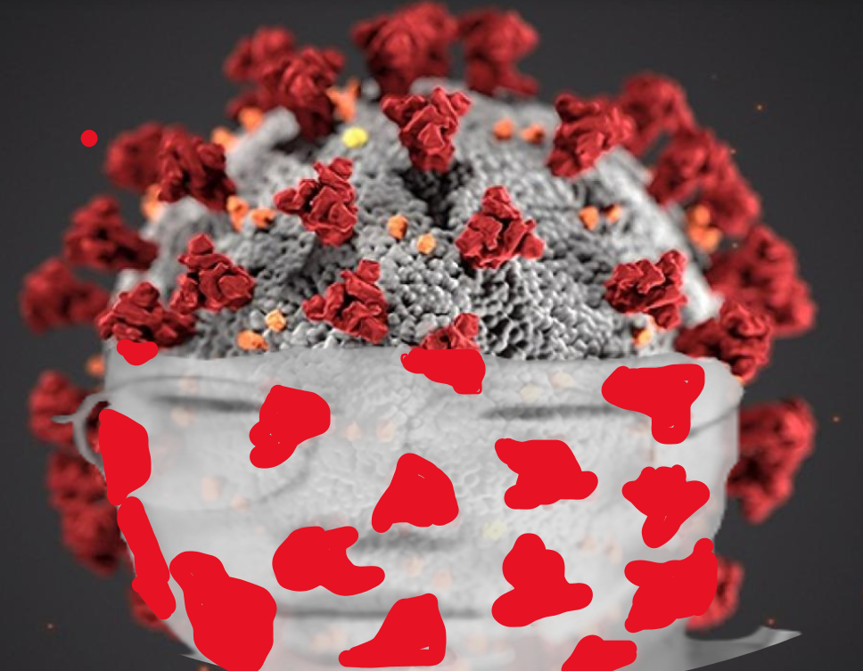

승호짤의 역사
-1.승호짤의 탄생
승호짤은 2021년 12월 28일 12시 20분경 디스코드 서버 "좋은서버"에서 만들어지고 유포 되었으며그 이후로 "위대한 승호짤"시리즈가 탄생했으나 익명의 사용자가 해당 기록을 삭제해 현재로썬 재건 수다방의 기록에서 볼수있다.
최초의 승호짤 제작자는 오른손의 흑설탕이다.
승호짤은 특정부위 합성/얼굴합성/사진 재가공/사진+특정 배경으로 나눌수있는데, 최초의 승호짤은 사진+특정배경으로 나누어져있다
승호짤의 처음제작 의도는 승호의 meme적인 재탄생과 함께 승호의 원래 모습을 알리자는 취지 였고,
잘이루어져 현재 승호짤은 meme화와 함께 승호의 본모습을 모두가 알수있는 계기가 됐다.
그 뒤로 하윤짤등 여러가지 파생버전이 탄생했고 반응이 좋지 않아, 오히려 오리지널리티인 승호짤이 부각되는 계기가 됐다
-최초의 승호짤 (모든 승호짤은 수익을 창출하지 않음)

최초의 승호짤에 사용된 승호짤은 하윤이 제공했다.
-2.왜 승호일까?
추측되는 설로 여러가지가 있으나, 가장 정설로 꼽히는 설로는 승호의 성격과 농담으로 쓰이기 좋은 얼굴이 시너지를 이루었다는 설이 있다그리고 최초의 승호짤에 사용된 승호얼굴 사진이 웃기기 때문이라는 것도 많이 제안되는 설이다
그리고 파생된 버전으로 많은 짤들이 있지만 가장 반응이 좋은 버전은 승호짤인것을 보아, 승호가 가장 웃기기 떄문이라는 것도 있다

-더러움 주의
-3.승호짤의 종류는?
승호짤의 종류는 앞서 말했듯 특정부위 합성/얼굴합성/사진 재가공/사진+특정 배경 세가지로 나눌수있는데, 가장 많은 종류는 얼굴합성짤이다,-각 종류 예시
-특정부위 합성
-얼굴합성

-사진 재가공(source)
-사진+특정 배경